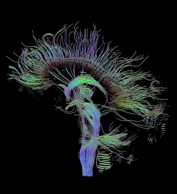
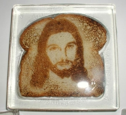

“Mira, ese carro parece triste y aquel furioso”. Era cierto, al observarlos, las palabras de mi hijo tomaron forma y noté la tristeza en aquel objeto ausente de emoción. No era la primera vez que así lo percibía pero los niños tienen más tiempo para fijarse en esas cosas. Hace unos días, un estudio sobre el tema anunciaba que un tercio de la población reconoce emociones en objetos inanimados. De hecho, el cerebro es capaz de distinguir una cara humana en una mancha de vino más rápido que el derrame mismo. Como discernir escenas fantásticas en las nubes.
Esto se debe a que nuestro órgano gris y blanco adora los patrones y los busca en todos lados. Ordenar el caos y extraer sentido de la situación más absurda son el pan neuronal de cada día. De hecho, el cerebro se empeña en buscar esquemas aún cuando es advertido de que las señales serán al azar. Por eso los casinos funcionan, porque la casa maximiza como estrategia mientras que el jugador continúa buscando causalidad en la casualidad.
Nuestro órgano gris y blanco adora los patrones y los busca en todos lados
Estas conductas, y otras aún más interesantes, han sido explicadas gracias a pruebas en escasos pacientes. Estos voluntarios habían sido operados del cuerpo calloso, materia en el cerebro que se encarga de unir los dos hemisferios. Los pacientes se sometieron a tal operación para remediar una epilepsia aguda que provocaba problemas eléctricos por todo el órgano. Décadas atrás se había descubierto por accidente, (un tumor en el área), que esta desconexión reducía de un 60 a un 70 por ciento las convulsiones. Pero imagine escuchar que le separarán sus hemisferios. ¿Qué ocurrirá con usted?, ¿se sentirá dividido?
Para sorpresa, estas personas parecían, al ojo no clínico, normales. Aparte de mover más la cabeza para recoger todo el escenario y hablar alto con el mismo fin, nada fallaba en ellos, no parecían desunidos o con problemas cognitivos. Eso es, hasta que pruebas detalladas revelaron curiosos resultados.
Es imposible explicar en tan poco espacio la magnitud de estos experimentos, pero intentaré reducirlo a lo más relevante. Los pacientes con los hemisferios desconectados tienen que percibir el mundo con ambos lados del cuerpo para que la información llegue a todo el cerebro. Para ver qué ocurría cuando aislaban uno de los hemisferios, pruebas específicas fueron diseñadas. En una de ellas, presentaron al ojo derecho una imagen de la pata de una gallina que sólo el hemisferio izquierdo percibió, al otro ojo le presentaron una escena de nieve, sólo el hemisferio derecho tuvo acceso a esa información. Después los pacientes tenían que elegir entre imágenes en una mesa frente a ellos. En las fotos estaba una gallina y una pala. Los voluntarios eligieron la gallina con la mano derecha y la pala con la izquierda, al preguntarles por qué optaron por esas imágenes respondieron: “Pues, esa pata era de la gallina y hay que limpiar con la pala lo que la gallina ensucia”.
El hemisferio izquierdo no tiene idea de por qué seleccionó una pala con la mano izquierda, nunca vio la escena de nieve, pero eso no lo detiene para explicar de forma coherente la aparición de la pala. Le es imposible decir “no lo sé”. Prefiere inventar.
Esto me recuerda un sinnúmero de desatinadas conductas humanas: desde las imágenes en las tostadas de pan que muchos deciden adorar, hasta los fantásticos cuentos que ha inventado el ser humano antes de humildemente admitir noble ignorancia. “Este hemisferio debe crear orden de cualquier ocurrencia o conducta, por eso le llamamos el intérprete porque recoge todos los datos y los ordena en una historia con sentido, aún cuando esté completamente equivocado”, explicó para Scientific American el neurólogo Michael S. Gazzaniga, quien ha realizado varios de estos experimentos con otros colegas.
Por eso, aún con el rígido método científico, algunos investigadores son acusados de fraude, porque el intérprete en su cerebro lee resultados a su favor. Para contrarrestar esta búsqueda de patrones, el quehacer científico se ha dotado de reglas y condiciones esenciales, como la réplica de los experimentos por otros equipos desinteresados.
No podemos decir lo mismo del pensamiento sobrenatural, las teorías conspiranoicas, la medicina homeopática ni los cultos y religiones. Nadie tiene que demostrar nada, todo está dicho y escrito, lo demás se lo dejamos al fantasioso intérprete zurdo del cerebro; ése que es capaz de justificar hasta lo que literalmente desconoce.
Cruce de papeles
Especializaciones cerebrales
En las clases de ciencia aprendimos que el hemisferio izquierdo controla la parte derecha del cuerpo y el derecho la izquierda. Pues bien, en forma generalizada esto es así, pero no del todo. En muchos casos, ambos hemisferios están pendientes de la acción aunque conocen las especializaciones del otro y delegan los trabajos acordes a esas áreas.
Otra vez de forma general, los neurólogos saben que el hemisferio izquierdo se especializa en el lenguaje, el habla y la conducta inteligente (excepto en una minoría de zurdos) mientras que el derecho es mucho mejor reconociendo caras, enfocando la atención y realizando distinciones perceptivas. También es bueno aclarar que en estos pacientes el cerebro no está desasociado del todo, continúa unido por el tallo y otras conexiones más profundas. Por eso estas personas tienen una idea vaga de los estímulos aislados a un hemisferio aunque no sepan cómo explicarlos. Para más información pueden dirigirse al centro SAGE para el estudio de la mente en la Universidad de California en Santa Bárbara.
Volver al índice de la Lupa Herética
© 2008-2024 Glenys Álvarez y Sin Dioses. Prohibida la reproducción con fines comerciales.
Comentarios
Comments powered by Disqus